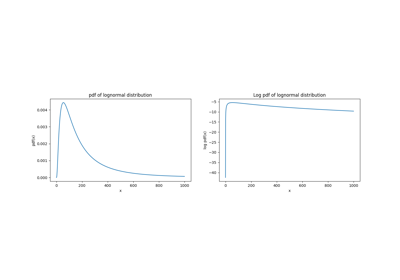

Home
Dimension Reduction
Distributions
Parent Distribution Class
Distributions Continuous 1D
List of 1D Continuous Distributions
Examples
Distribution fitting
Distribution Continuous 1D Example
Distributions Discrete 1D
Copulas
Distributions ND
User Defined Distributions
Inference
Reliability
RunModel
Sampling
Scientific Machine Learning
Sensitivity
Stochastic Process
Surrogates
Transformations
Utilities
UQpy architecture
UQpy paper
Bibliography
News
UQpy
Distributions
Continuous Distributions 1D
Distribution Continuous 1D Examples
View page source
Distribution Continuous 1D Examples
Distribution fitting
Distribution fitting

Distribution Continuous 1D Example
Distribution Continuous 1D Example
Gallery generated by Sphinx-Gallery